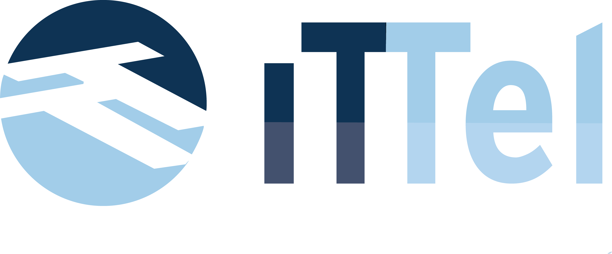
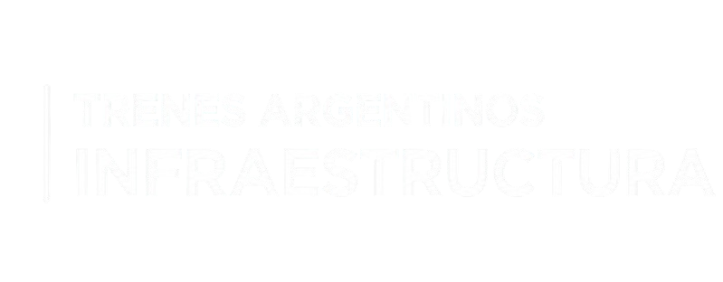
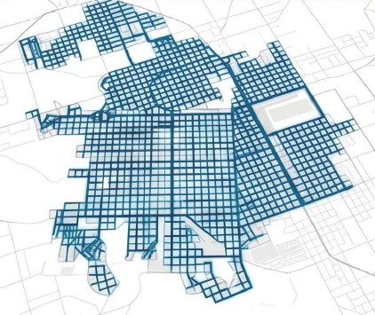
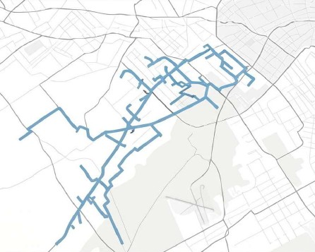
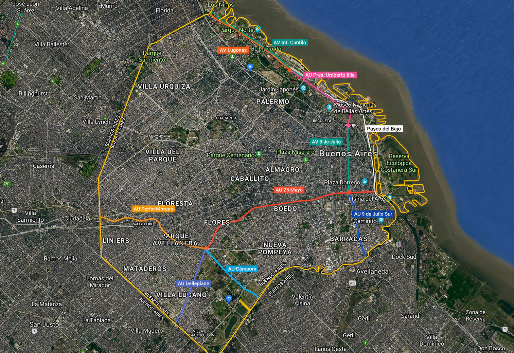
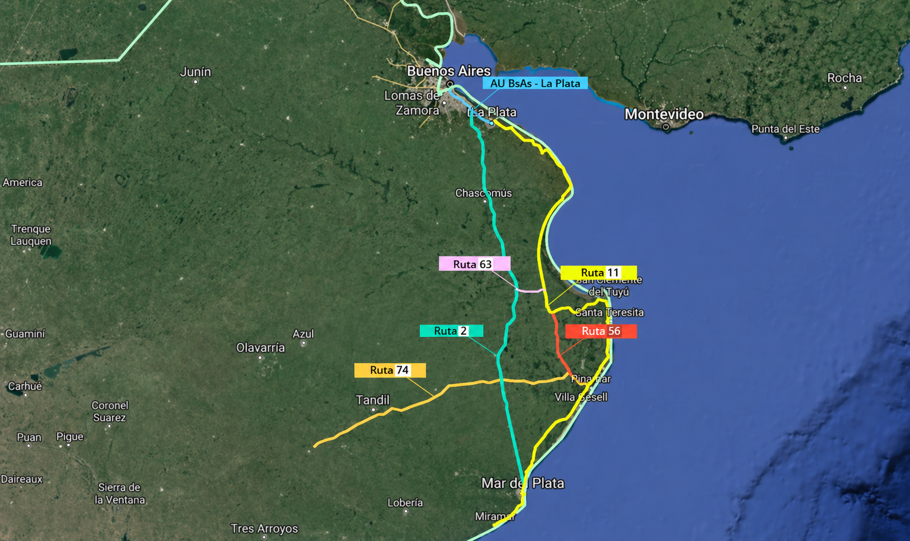
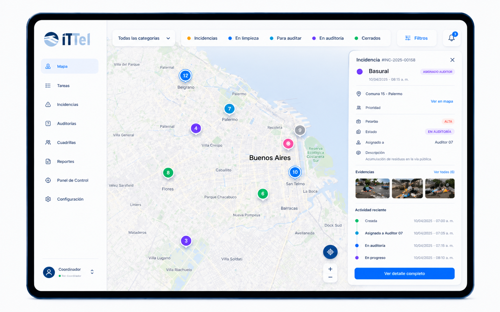
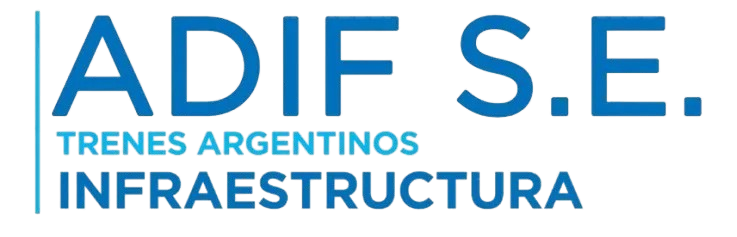

REDES NEUTRALES
Desarrollo y compartición de infraestructura propia (Torres y Fibra Oscura) optimizando el CAPEX de múltiples operadores.
GRUPO ITTEL

Information Technology & Telecommunications
LÍDERES EN ARGENTINA EN EL DESARROLLO DE INFRAESTRUCTURA, OPERACIÓN DE REDES Y SERVICIOS DE CONECTIVIDAD A GRAN ESCALA
Somos líderes en Argentina en el desarrollo de infraestructura, operación de redes y servicios de conectividad a gran escala.
Desarrollo y compartición de infraestructura propia (Torres y Fibra Oscura) optimizando el CAPEX de múltiples operadores.
Gestión proactiva de redes con NOC 24/7 y cuadrillas de respuesta rápida en campo.
Operadores de Internet y TV por fibra (FTTH) a través de nuestras marcas USITTEL y LARANET.
Ejecución de obras civiles, despliegue tecnológico en empresas y tendidos de fibra óptica.
Desarrollo y compartición de infraestructura propia (Torres y Fibra Oscura)

Soluciones integrales de infraestructura para redes de alta exigencia.

Despliegue de red FTTH con arquitectura GPON para Internet e IPTV de alta calidad en Tandil, operado comercialmente bajo la marca USITTEL con cobertura urbana y periurbana en expansión.

Diseño e implementación de red óptica pasiva FTTH en La Matanza, con arquitectura escalable, backbone redundante y operación 24/7 bajo la marca comercial LARANET.
CAPACIDAD REGIONAL.
LA MATANZA
NODO FO CENTRALIZADO
TANDIL
MANZANAS FTTH ACTUALMENTE

+300 km de Fibra Óptica operativa y 73 Torres críticas desplegadas para maximizar la conectividad en la zona de mayor demanda del país.

+100 km de Fibra Óptica con 41 Torres estratégicas, mejorando la densidad y demanda de conectividad en el territorio provincial.
CAPACIDAD DE RED.
KM DE FIBRA ÓPTICA
DESPLEGADOS A NIVEL NACIONAL
TORRES TELCO
EN OPERACIÓN A NIVEL NACIONAL
Integra Torres, Fibra Óptica y Valor Agregado para el beneficio de toda la red.
Despliegues integrales de Fibra Óptica y Torres para TODOS los Operadores Móviles de Argentina a todo nivel jurisdiccional.
Control objetivo, trazable y en tiempo real de servicios en la vía pública.
Visualización de incidencias y tareas sobre mapa con ubicación exacta y seguimiento en tiempo real.
Registro de auditorías, evidencias, estados y responsables con historial completo de cada acción.
Asignación de tareas, control de cuadrillas e indicadores para una operación más eficiente.

NÚMEROS QUE NOS RESPALDAN.
AÑOS DE EXPERIENCIA
PROYECTOS DE ÉXITO
DE SLA GARANTIZADO
Operadores, concesionarios y organismos que confían en nuestra infraestructura.

Consultas comerciales, técnicas o institucionales.
0810-345-ITTEL (4883)